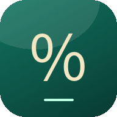

생활비 계산기 9종
이번 달 새는 돈부터
퇴직금·청약까지, 3초에.
청구서 숫자 몇 개만 넣으면 끝납니다. 전기요금 누진세, 매달 빠져나가는 고정비와 숨은 지원금, 부업 3.3% 세금과 건강보험료, 카드 공제 황금비율과 연말정산 환급액, 차령 반영 자동차세와 1월 연납 할인, 육아휴직 급여와 부모급여·아동수당, 퇴직금과 실업급여, 청약 가점과 신생아 특례대출 월 이자, 연봉과 월급 실수령액까지 — 설치 없이 브라우저에서 바로 계산해 보세요.
겨울 전기요금 계산기
한전 주택용 누진제로 이번 달 요금과 누진 단계를 계산하고, 히터·온수매트를 더했을 때 늘어나는 요금까지 확인합니다.
요금 계산하기 고정비 · 지원금고정비 체크기
새는 고정비와 구독료를 진단하고, 2026년에 놓치기 쉬운 지원금·환급금을 찾아 1년에 아낄 수 있는 돈을 계산합니다.
30초 진단하기
부업 세금 · 건보료N잡 세금 계산기
3.3% 떼인 부업 수입이 5월 종합소득세와 건강보험료를 얼마나 올리는지, 피부양자 탈락 여부까지 계산합니다.
세금 확인하기 연말정산 · 환급연말정산 환급 계산기
카드 25% 문턱과 체크 30% 황금비율, 연금저축·IRP·월세·의료비·교육비 세액공제로 2027년 2월 예상 환급액을 계산합니다.
환급액 계산하기 자동차세 · 유류비자동차세 연납 계산기
배기량과 최초 등록 연도로 차령 경감을 반영한 자동차세를 계산하고, 1월 연납 할인액(약 4.58%)과 겨울철 기름값까지 한 번에 확인합니다.
할인액 계산하기육아휴직·부모급여 계산기
통상임금과 휴직 개월 수로 육아휴직 급여와 6+6 부모 함께 육아휴직제를, 자녀 나이로 부모급여·아동수당·첫만남이용권까지 계산합니다.
지원금 계산하기 퇴직금 · 실업급여퇴직금·실업급여 계산기
입사일·퇴사일과 3개월 급여로 예상 퇴직금과 퇴직소득세를, 고용보험 기간과 나이로 실업급여 1일액·받는 날수·총 수령액을 계산합니다. 아르바이트 주휴수당까지.
받을 돈 계산하기 청약 가점 · 대출청약 가점·특례대출 계산기
무주택기간·부양가족수·통장 가입기간으로 청약 가점(84점 만점)을 계산하고, 신생아 특례대출의 한도·금리와 월 상환액·총 이자까지 확인합니다.
가점·한도 계산하기 연봉 · 월급 실수령연봉 실수령액 계산기
연봉에서 4대보험료·소득세·지방소득세를 뺀 월 실수령액을 계산하고, 받고 싶은 실수령액에서 연봉을 역산합니다. 식대 비과세와 부양가족 수까지.
실수령액 계산하기요금표·제도 해설은 블로그에
계산기 뒤에 있는 한전 요금표, 지원금 조건, 부업 세금 규칙, 연말정산 세법, 자동차세 연납 규정, 육아휴직·부모급여 기준, 퇴직금·실업급여 계산법, 청약 가점과 신생아 특례대출 조건을 글로 풀어 두었습니다. 계산 결과와 함께 보면 이해가 빨라요.